측량및지형공간정보산업기사 (2007-09-02 기출문제)
1과목: 응용측량
1. 지중레이다(Ground Penetration Radar:GPR)탐사기법은 전자파의 어떤 성질을 이용하는가?
- 방사
- 반사
- 흡수
- 산란
(정답률: 알수없음)

2. 배면적(拜面積)을 구하는 방법으로 옳은 것은?
- l∑(조정 위거×배횡거)l
- l∑(조정 경거×배횡거)l
- l∑(조정 위거×횡거)l
- l∑(조정 위거×조정 경거)l
(정답률: 알수없음)
3. 축척 1/1000 지도상의 면적을 잘못하여 축척 1/1200로 측정하였더니 10000m2가 나왔다. 실제면적은?
- 6944m2
- 89446944m2
- 109446944m2
- 144006944m2
(정답률: 알수없음)
4. 도형의 면적을 구하는데 있어서 아래 그림과 같은 곡선의 호 AB를 2차 포물선으로 가정할 때 그 면적 ABEF를 구하는 공식은?
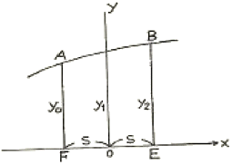
- 가.
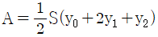
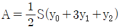
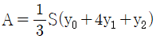
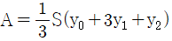
(정답률: 알수없음)
5. 하천측량에서 심천측량과 가장 관계 깊은 측량은?
- 횡단측량
- 종단측량
- 유속측량
- 유량측량
(정답률: 알수없음)
6. 하천이나 계곡을 횡단하여 수준측량을 할 경우 가장 정확하게 측량할 수 있는 방법은?
- 교호수준측량
- 삼각수준측량
- 기압수준측량
- Stadia측량
(정답률: 알수없음)
7. 원곡선 설치에서 곡선반경 R=300m, 교각 I=78° 20' 30"일 때 노선시점부터 원곡선 시점까지의 추가거리가 1300.080m이었다. 시단현의 편각은 얼마인가? (단, 중심말뚝 간격은 20m이다.)
- 1° 41‘ 59“
- 1° 44‘ 59“
- 1° 54‘ 08“
- 1° 148‘ 59“
(정답률: 알수없음)
8. 다음과 같은 그림의 체적계산에서 양단면 평균법과 각주공식으로 구한 체적(Volume)의 차이를 나타내는 식으로 옳은 것은?
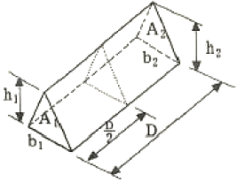
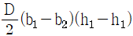
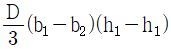
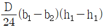
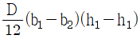
(정답률: 알수없음)
9. 단곡선을 설치할 때, 곡선반지름이 180m, 교각이 52° 20‘ 인 경우 접선장(T.L)의 길이는 얼마인가?
- 88.44m
- 109.99m
- 1461.55m
- 233.17m
(정답률: 알수없음)
10. 곡선 설치시 곡선길이(C.L)를 구하는 식은?
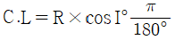
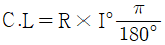
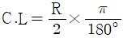
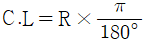
(정답률: 알수없음)
11. 반지름이 1200m인 원곡선에 의한 종단 곡선 설치시 시점에 대한 접선과 시점으로부터 횡거 20m 지점에서의 종단 곡선 사이의 종거는?
- 0.17m
- 1.45m
- 2.56m
- 3.14m
(정답률: 알수없음)
12. 갱내에서 차량 등에 의하여 파손되지 않도록 콘크리트 등을 이용하여 만든 중심말뚝을 무엇이라 하는가?
- 도벨(dowel)
- 레벨(level)
- 자이로(gyro)
- 도갱(導坑)
(정답률: 알수없음)
13. 그림에서 A점의 표고가 50m라면 B점의 표고는?
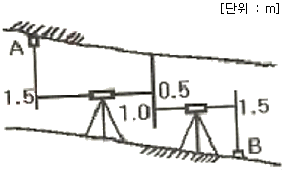
- 46.5m
- 47.5m
- 49.0m
- 49.5m
(정답률: 알수없음)
14. 터널내의 곡선을 설치할 때 주로 사용되는 방법이 아닌 것은?
- 중앙종거법
- 현편거법
- 내접다각형법
- 외접다각형법
(정답률: 알수없음)
15. 다음 중 교량의 경관계획에서 결정할 사항이 아닌 것은?
- 교량의 형식 및 규모
- 교량의 형태 및 색채
- 교량과 수면의 조화
- 교량의 성능 관리
(정답률: 알수없음)
16. 완화곡선의 성질을 설명한 것 중 잘못된 것은?
- 완화곡선의 접선은 시점에서 직선에, 종점에서 원호에 접한다.
- 종점에서의 곡선반지름이 곡선장(L)에 비례하는 곡선을 의미한다.
- 완화곡선에 연한 곡선반지름의 감소율은 칸트의 증가율과 같다.
- 곡선반지름은 완화곡선의 시점에서 무한대, 종점에서 원곡선 R로 된다.
(정답률: 알수없음)
17. 클로소이드 완화곡선에서 동일 곡선반경에서 완화곡선의 매개변수(A)가 1.5배 증가하면 완화곡선길이는 몇 배가 되는가?
- 2.25
- 3.00
- 3.50
- 6.90
(정답률: 알수없음)
18. 유토곡선(mass Curve)을 작성하는 목적과 거리가 먼 것은?
- 토공기계의 선정
- 토량의 배분
- 노선의 횡단결정
- 토량의 운반거리 산출
(정답률: 알수없음)
19. 하천의 횡단면 연직선 내의 평균유속을 1점법을 사용하여 구하고자 할 때 관측하여야 할 속도(V)는?
- 수면에서 수심의 20%되는 지점의 유속(V0.2)
- 수면에서 수심의 60%되는 지점의 유속(V0.6)
- 수면에서 수심의 80%되는 지점의 유속(V0.8)
- 수면에서 수심의 20%와 80% 되는 지점의 유속의 평균
(정답률: 알수없음)
20. 하천의 양수표를 설치하는 장소로 적당하지 않은 것은?
- 양수표의 설치위치 뿐만 아니라 그 상류, 하류의 상당한 범위의 하상이나 하안이 안정한 곳
- 분류와 지류가 합류하는 지점의 중앙인 곳
- 홍수시 유실, 이동, 파손되지 않는 곳
- 평시, 홍수시를 막론하고 언제나 쉽게 양수표를 읽을 수 있는 곳
(정답률: 알수없음)
2과목: 사진측량 및 원격탐사
21. 다음 중 가장 먼저 개발된 도화기는?
- 해석식 도화기(analytical plotter)
- 기계식 도화기(analog plotter)
- 수치 도화기(digital plotter)
- 혼합식 도화기(hybrid plotter)
(정답률: 알수없음)
22. 항공사진의 해상력(분해능)이 0.04mm이면 축척 1/2500인 사진에서 물체 크기가 최소 얼마 이상일 때 판별 가능한가?
- 0.6m
- 1.0m
- 1.6m
- 2.2m
(정답률: 알수없음)
23. 항공사진의 주점에 대한 설명으로 틀린 것은?
- 렌즈중심으로부터 사진에 내린 수선의 발이다.
- 렌즈의 광축과 사진면이 교차하는 점이다.
- 항공사진에서는 마주보는 지표의 연결교차점이 일반적인 주점이다.
- 사진의 중심으로 경사사진에서는 연직점과 일치한다.
(정답률: 알수없음)
24. 평균고도 400m의 토지를 해면상 3000m에서 촬영하여 C계수(factor)가 1300인 도화기로써 도화하는 경우 그럴 수 있는 최소 등고선 간격은?
- 4m
- 20m
- 2m
- 10m
(정답률: 알수없음)
25. 항공사진의 특수 3점이 아닌 것은?
- 주점
- 연직점
- 등각점
- 접합점
(정답률: 알수없음)
26. 수록된 데이터의 내용, 품질, 조건 및 특징 등을 저장한 데이터로서 데이터의 이력서라고 할 수 있는 것은?
- 위상데이터
- 메타데이터
- 래스터데이터
- 속성데이터
(정답률: 90%)
27. 지리정보시스템(GIS)에 대한 설명으로 맞지 않는 것은?
- 지리정보의 정산화 도구
- 고품질의 공간정보 획득 도구
- 합리적인 공간의사결정을 위한 도구
- CAD 및 그래픽 전용 도구
(정답률: 알수없음)
28. 사진촬영용 항공기의 요구 조건이 아닌 것은?
- 한정성, 촬영성, 시계가 좋아야 한다.
- 비행속도의 조정이 가능하여야 하며, 요구속도를 얻을 수 있어야 한다.
- 적재량이 많고 비행경비가 저렴해야 한다.
- 항속거리가 길고 이ㆍ착륙 거리가 길어야 한다.
(정답률: 알수없음)
29. 화재나 응급시 소방차나 앰뷸런스의 운전경로 또는 항공기의 운행경로 등의 최적경로를 결정하는데 가장 적합한 GIS의 분석방법은?
- 관망 분석
- 중첩 분석
- 버퍼링 분석
- 근접성 분석
(정답률: 알수없음)
30. 카메라의 경사에 의한 변위를 수정하고 축척도 조정된 사진지도는?
- 약집성 사진지도
- 반조정성 사진지도
- 조정집성사진지도
- 정사투영 사진지도
(정답률: 알수없음)
31. 두 지점의 시차차가 1.15m, 촬영고도 1000m, 주점기선길이 70mm일 경우 비고는 약 얼마인가?
- 10m
- 12m
- 14m
- 16m
(정답률: 알수없음)
32. 다음 보기 중 나머지 세 개의 보기와 자료의 구조가 다른 자료의 취득 방법은?
- 인공위성 영상 자료
- 디지타이징
- 스캐닝
- 수치항공사진
(정답률: 알수없음)
33. 대지표정에 최소한 소요되는 기준점의 수는?
- 3점의 (X, Y)좌표 및 2점의 (Z) 좌표
- 3점의 (X, Y, Z)좌표
- 2점의 (X, Y, Z)좌표 및 1점의 (Z)좌표
- 2점의 (X, Y, Z)좌표 및 2점의 (Z)좌표
(정답률: 알수없음)
34. 다음 설명 중 벡터식 자료구조가 아닌 것은?
- 점사상(Point)
- 선사상(Line)
- 면사상(Polygon)
- 격자구조(Grid)
(정답률: 알수없음)
35. 다음 사진측량과 관련된 용어에 대한 설명으로 옳은 것은?
- 한 쌍의 중복된 사진으로 입체시 되는 지역을 모형(model)이라 한다.
- 사진이 촬영 횡방향 길이로 접합되어 있는 형태를 스트립이라 한다.
- 사진이 촬영 종방향 길이로 접합되어 있는 형태를 블럭이라 한다.
- 편류각이라 함은 지구의 자기장과 관련이 있다.
(정답률: 알수없음)
36. 공간데이터베이스 내의 도형자료가 자져야 할 관련 정보로서 가장 거리가 먼 것은?
- 위치
- 위상
- 영상
- 속성
(정답률: 알수없음)
37. 다음 중 입체사진의 조건으로 옳지 않은 것은?
- 기선도고비가 적당해야 한다.
- 축척자가 15% 이상인 사진의 입체시는 불가능할 수 있다.
- 사진이 연접되어 있지 않아도 동일 코스 2매의 사진이면 가능하다.
- 연접사진의 촬영 광축은 동일 평면상에 있는 것이 좋다.
(정답률: 알수없음)
38. 초점거리 15cm인 사진기로 촬영고도 900m에서 촬영한 사진상에 길이 60m의 교량은 몇 cm로 나타나는가?
- 0.4cm
- 0.6cm
- 0.9cm
- 1.0cm
(정답률: 알수없음)
39. 항공사진의 사진축척이 1:10000 일 때 표정에 이용되는 기준점의 수평위치 한계로 가장 적합한 것은?
- 0.01m~0.03m
- 0.1m~0.3m
- 1m~3m
- 5m~1m
(정답률: 알수없음)
40. 항공사진의 축척(Scale)에 대한 설명 중 옳은 것은?
- 카메라의 초점거리에 비례, 비행고도에 반비례
- 카메라의 초점거리에 반비례, 비행고도에 비례
- 카메라의 초점거리에 반비례, 비행고도에 반비례
- 카메라의 초점거리에 비례, 비행고도에 비례
(정답률: 알수없음)
3과목: GIS 및 GPS
41. 50m 줄자로 250m를 관측한 경우 줄자에 의한 거리관측오차를 50m마다 ±1cm로 가정하면 전체길이의 거리측량에서 발생하는 오차는 얼마인가?
- ±2.2cm
- ±3.8cm
- ±4.8cm
- ±5.2cm
(정답률: 알수없음)
42. 수준측량의 후시에 대한 설명으로 가장 알맞은 것은?
- 미지점에 세운 표척의 읽음값
- 기지점에 세운 표척의 읽음값
- 종간점에 세운 표척의 읽음값
- 측점에 세운 표척의 읽음값
(정답률: 알수없음)
43. 수준측량을 할 때 동일 표정을 사용해야 하는 이유로 가장 적합한 것은?
- 지구곡률에 의한 오차를 제거하기 위하여
- 측량시 작업량을 최소화 하기 위해
- 표척의 오독을 방지하기 위하여
- 표척눈금의 영점오차를 줄이기 하여
(정답률: 알수없음)
44. 지구를 장반경이 6370km, 단반경이 6350km인 타원형이라 할 때 편평률은?
- 약 1/320
- 약 1/430
- 약 1/500
- 약 1/630
(정답률: 알수없음)
45. 방위각이 320° 35“ 21‘일 때 방위는 얼마인가?
- N39° 24' 39" W
- S39° 24' 39" W
- N39° 24' 39" E
- S39° 24' 39" E
(정답률: 46%)
46. 방위각의 설명으로 옳은 것은?
- 진북을 기준으로 한 방향각이다.
- 자북을 기준으로 한 방향각이다.
- 임의의 방향을 기준으로 한 방향각이다.
- 지구의 회전축을 기준으로 한 방향각이다.
(정답률: 알수없음)
47. 오차의 방향과 크기를 산출하여 소거할 수 있는 오차는?
- 착오
- 정오차
- 우연오차
- 개인오차
(정답률: 알수없음)
48. 도상에서 세변의 길이를 관측한 결과 각각 21.5cm, 30.3cm, 28.0cm 이었다면 실제면적은? (단, 지형도의 축척=1/500)
- 7325m2
- 7424m2
- 7124m2
- 7240m2
(정답률: 알수없음)
49. 그림과 같이 어떤 사면 AB에서 A점의 표고를 200m, 점 B의 표고를 75m, AB의 수평거리는 220m이다. 이때 10m마다 등고선을 넣는다고 하면 150m의 등고선은 AB선상 B에서부터 얼마나 떨어진 곳에 있는가?
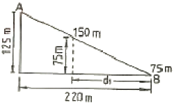
- 155m
- 150m
- 135m
- 132m
(정답률: 알수없음)
50. 트랜싯을 조정할 때 고려해야 할 사항이 아닌 것은?
- 수준기축이 연직축에 수직이 되어야 한다.
- 수평축과 연직축은 평행이 되어야 한다.
- 시준선이 수평할 때 망원경 수준기의 기포가 중앙에 위치해야 한다.
- 시준선이 수평하고, 망원경 수준기의 기포가 중앙에 있을 때 연직분도원의 유표가 0으로 표시되어야 한다.
(정답률: 알수없음)
51. 전자기파 거리측량기기에 대한 설명 중 옳지 않은 것은?
- 속도가 알려진 전파 에너지가 두 점간을 진행한 시간을 관측하여 두 점간의 거리를 계산하는 방법은 사용한다.
- 광파거리측량기는 가시광선 또는 적외선과 같은 비가시광선을 주로 사용하며, 중ㆍ단거리의 관측에 많이 사용된다.
- 전파거리측량기는 마이크로파의 파장대를 주로 사용하며 수심 km등 장거리의 관측에 사용된다.
- 광파거리측량기는 안개, 비 등과 같은 기상조건의 영향을 받지 않으며 주국과 종국에서 서로 무선통화가 불가능하다.
(정답률: 알수없음)
52. 관측값 I1=20.25m(경중률 P1=2), 관측값 I2=20.26m(경중률 P1=1), 관측값 I3=20.27m(경중률 P1=3)일 때 최확값은?
- 50.262m
- 20.260m
- 20.264m
- 20.226m
(정답률: 알수없음)
53. 기포 한 눈금의 길이가 2mm, 감도가 20“일 때 곡률반경은 얼마인가?
- 10.37m
- 20.63m
- 23.26m
- 38.42m
(정답률: 알수없음)
54. GPS에 의한 위치관측법에서 상대관측방법에 대한 설명이 아닌 것은?
- 4개 이상의 위성에서 수신한 신호 가운데 C/A code를 이용하여 실시간처리로 수신기의 위치를 관측하는 정지식 방법
- 기지점에 1대의 수신기를 설치하여 고정국으로 정한 다음, 다른 수신기를 이용하면서 최소 4개 이상의 위성신호를 수신하여 이동지점의 위치를 관측하는 이동식GPS방법
- 정확히 알고 있는 좌표지점에 기지국용 GPS 수신기를 설치하고 위성을 관측하여 각 위성의 의사거리 보정값을 구하여 이동국용 GPS수신기 위치결정 오차를 개선하는 사용자 중심의 위치관측인 정밀GPS방법
- 이동식 GPSD에서 기지국 GPS로 GPS 관측자료를 송신하여 이동국 GPS의 정확한 위치관측 및 위치변화량의 관측을 위하여 사용되는 관리자 중심의 위치관측인 역정밀GPS방법
(정답률: 알수없음)
55. 삼변측량에서 변의 길이로부터 각을 계산하는 식은?
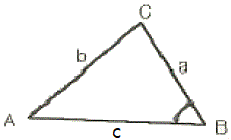
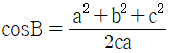
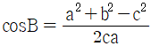
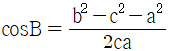
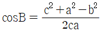
(정답률: 알수없음)
56. 어떤 지역을 다각측량하여 다음과 같은 세 점의 평면직각 좌표를 얻었다. 이 세 점으로 이루어지는 다각형 내부의 면적은 얼마인가? (단, A점 좌표(0m, 100m), B점 좌표(50m, 200m), C점 좌표(-200m, 250m))
- 6875m2
- 13750m2
- 27500m2
- 55000m2
(정답률: 알수없음)
57. 표준길이보다 36mm가 짧은 30m 줄자로 관측한 거리가 480m일 때 실제거리는?
- 479.424m
- 479.856m
- 480.144m
- 480.576m
(정답률: 알수없음)
58. 다음은 등고선의 성질을 설명한 것이다. 옳지 않은 것은?
- 등고선은 도면 안 또는 밖에서 반드시 폐합하며 도중에 소실되지 않는다.
- 낭떠러지와 동굴에서는 교차한다.
- 등고선은 경사가 급한 곳에서는 간격이 넓고, 경사가 완만한 곳에서는 간격이 좁다.
- 등고선 간의 최단거리의 방향은 그 지표면의 최대 경사의 방향을 가리킨다.
(정답률: 알수없음)
59. 다각측량에서 두 점(A, B)의 좌표를 (x1, x2), (y1, y2)라 할 때, 방위각 θ=tan-1
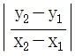
에서 분모가 (-), 분자가 (+)값을 얻었다면 방위각은 몇 상한에 있는가?- 제1상한
- 제2상한
- 제3상한
- 제4상한
(정답률: 알수없음)
60. 비교적 폭이 좁고 거리가 긴 지역에 적합하며 하천측량, 노선측량, 터널측량 등에 이용되는 삼각망은?
- 단열삼각망
- 유심다각망
- 사변형망
- 격자삼각망
(정답률: 알수없음)
4과목: 측량학
61. 기본측량의 실시공고를 하는 자는?
- 건설교통부장관
- 시ㆍ도지사
- 국토지리정보원장
- 측량계획기관
(정답률: 알수없음)
62. 다음 측량표 중 일시표지에 속하는 것은?
- 측표
- 표기
- 검조의
- 임시측량표지막대
(정답률: 알수없음)
63. 측량법에서 정의한 측량성과란?
- 당해 측량에서 얻은 지형측량의 최종성과안을 말한다.
- 당해 측량에서 얻은 최종결과를 말한다.
- 당해 측량에서 얻은 삼각점의 최종결과치만을 말한다.
- 당해 측량에서 얻은 수준점의 최종결과치만을 말한다.
(정답률: 알수없음)
64. 다음 중 지도의 외도곽 바깥쪽에 표시하는 사항이 아닌 것은?
- 도엽명
- 행정구역색인
- 발행자
- 제도사 성명
(정답률: 알수없음)
65. 다음 측량의 종류 중 측량법의 규제를 받지 아니하는 것은?
- 지하시설물측량
- 측지측량
- 토지의 신규등록측량
- 항공촬영
(정답률: 알수없음)
66. 1:25000 지형도 도식 적용규정에서 규정한 지형의 설명으로 가장 적합한 것은?
- 지표면의 기복상태를 말하며 벼랑, 바위 등의 모든 특수지형이 포함된다.
- 자연적, 인공적 축조물의 고저기복을 망라한다.
- 토질, 지면의 상태, 토지의 이용현황을 망라한다.
- 육지와 해면(수면)의 종류이다.
(정답률: 알수없음)
67. 기본측량에 종사하는 자가 측량을 실시하기 위하여 타인에게 손실을 입힌 경우 이 손실에 대한 보상은 다음 중 누가 하여야 하는가?
- 국토지리정보원장
- 건설교통부장관
- 공공측량 계획기관
- 행정자치부장관
(정답률: 알수없음)
68. 건설교통부장관은 중앙지명위원회에서 심의 결정된 지명을 고시하여야 하는데 이때 지명고시에 포함되지 않는 사항은?
- 변경된 지명
- 소재지(행정구역으로 표시한다.)
- 지명변경의 심의결정 연월일
- 위치(경도 및 위도로 표시한다.)
(정답률: 알수없음)
69. 건설교통부장관, 국토지리정보원장의 권한을 대한측량협회 등에 위탁할 수 있는 업무는?
- 측량측량성과심사 및 지도 등의 심사
- 측량기술자 중 측량기술사 자격증 발금
- 공공측량성과의 고시
- 공공측량의 측량기록 사본의 제출요구
(정답률: 알수없음)
70. 측량협회에 대한 설명으로 잘못된 것은?
- 협회는 법인으로 한다.
- 측량업자 및 측량기술자는 그들의 품위보전 등을 위하여 측량협회를 설립할 수 있다.
- 업무구역을 전국으로 하되, 전체 시ㆍ군ㆍ구의 3분의 3이상에 사무소를 두고 있어야 한다.
- 협회는 그 주된 사무소의 소재지에서 설립등기를 함으로써 설립한다.
(정답률: 알수없음)
71. 시장ㆍ군수 또는 구청장은 그 관할구역안에서 지형ㆍ지물의 변동이 있는 때에는 국토지리정보원장에게 지형ㆍ지물의 변동사항을 통보하여야 하는데 건설교통부형이 정하는 바에 따라 매년 언제까지 통보하여야 하는가?
- 1월말
- 2월말
- 3월말
- 4월말
(정답률: 알수없음)
72. 측량의 기준에 대한 설명으로 잘못된 것은?
- 위치는 지리학적 경위도와 평균해면으로부터의 높이로 표시한다.
- 거리 및 면적은 수평곡면상의 평균값으로 표시한다.
- 지리학적 경위도는 세계측지계에 따라 측정한다.
- 측량의 원점은 대한민국경위도원점 및 수준원점으로 한다.
(정답률: 알수없음)
73. 다음 설명 중 옳은 것은?
- 공공측량은 기본측량의 측량성과만을 기초로 하여 실시하여야 한다.
- 도지사는 공공측량 계획기관에 대해서 공공측량에 관한 장기계획서의 제출을 요구할 수 있다.
- 일반측량은 기본측량 또는 공공측량의 측량성과 및 측량기록을 기초로 하여 실시하는 것을 원칙으로 한다.
- 공공측량 성과 및 측량기록의 사본은 일반인이 열람할 수 없다.
(정답률: 알수없음)
74. 다음 중 측량업의 종류가 아닌 것은?
- 연안조사측량업, 공간영상도화업
- 기본측량업, 공공측량업
- 일반측량업, 수치지도제작업
- 지하시설물측량업, 항공촬영업
(정답률: 알수없음)
75. 측량업자인 법인이 파산 또는 합병외의 사유로 해산한 때에는 그 청산인이 건설교통부 장관 또는 시ㆍ도지사에게 그 사실을 신고하여야 하는데, 이 때 그 사유가 발생한 날로부터 최대 며칠이내에 신고를 하여야 하는가?
- 60일
- 30일
- 20일
- 10일
(정답률: 82%)
76. 다음 중 건설교통부 장관 또는 시ㆍ도지사가 측량업의 등록을 취소하여야 하는 사항이 아닌 경우는?
- 다른 사람에게 자기의 등록수첩을 대여한 때
- 정당한 사유없이 등록을 한 날로부터 6개월 이내에 영업을 개시하지 아니한 때
- 다른 사람에게 자기의 등록증을 대여한 때
- 허위 기타 부정한 방법으로 측량업의 등록을 한 때
(정답률: 알수없음)
77. 기본측량을 바르게 설명한 것은?
- 기준점 측량의 측량 성과이다.
- 다른 측량 측량의 측량 성과이다.
- 모든 측량의 기초가 되는 측량이다.
- 지적 측량의 측량성과이다.
(정답률: 알수없음)
78. 측량의 실시공고내용 중 필수적 사항이 아닌 것은?
- 측량의 종류
- 측량의 실시자
- 측량의 실시기간
- 의 실시지역
(정답률: 알수없음)
79. 측량업의 등록을 한 자는 등록사항 중 변경 사항이 있는 때에는 변경등록을 하여야 한다. 다음 중 변경등록하여야 할 사항이 아닌 것은?
- 대표자의 소재지
- 법인의 대표자 또는 임원
- 상호
- 기술능력 및 장비
(정답률: 알수없음)
80. 다음 투영방법 중 1:50000 국토 기본도에서 적용하고 있는 것은?
- 원주(圓柱)
- 횡단머케이트(T.M)
- 만국횡단머케이트(U.T.M)
- 람벨트(Lambelt)
(정답률: 알수없음)